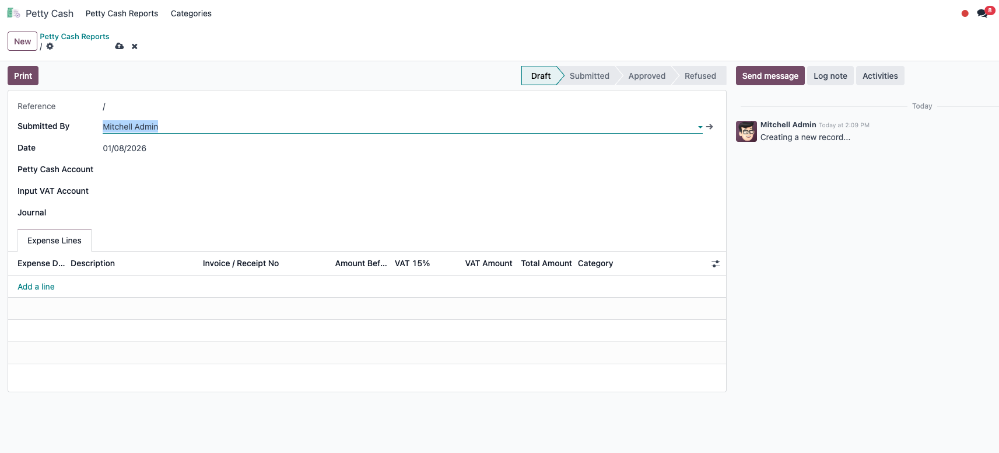
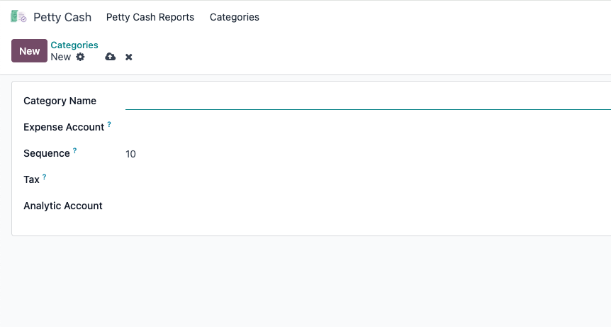
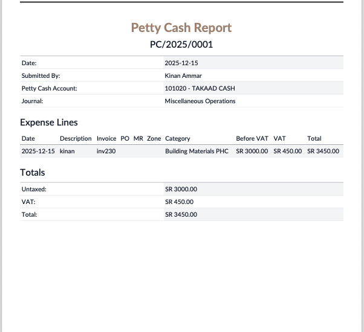

Structured petty cash reporting with approvals, VAT handling, attachments, Excel import and draft journal-entry generation.
Create numbered petty cash reports, capture detailed expense lines and supporting documents, approve them, and generate accounting entries with configurable expense, VAT and petty cash accounts.
Record category, description, references and amounts for multiple petty cash transactions under one controlled report.
Optional VAT handling calculates the tax amount while keeping untaxed, VAT and total figures visible.
Map petty cash categories to the appropriate expense accounts for consistent posting.
Attach receipts and supporting documents to petty cash lines and carry the supporting evidence into the accounting process.
Users submit reports for accountant review, with approve/reject controls and reset-to-draft support where permitted.
Generate accounting entries using the configured petty cash account, VAT account and journal with controlled debit/credit logic.
Bulk-import petty cash lines using the included spreadsheet import workflow and template.
Print professional petty cash reports and use chatter tracking for comments and audit visibility.



The app is fully usable in the backend. If Employee Portal Suite is installed too, the included auto-install bridge can add employee petty cash submission and viewing to the portal automatically.